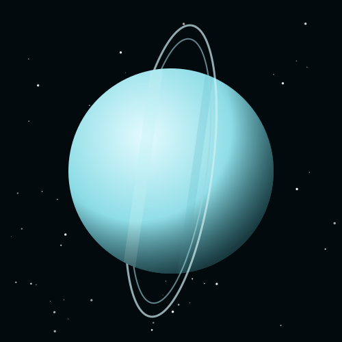
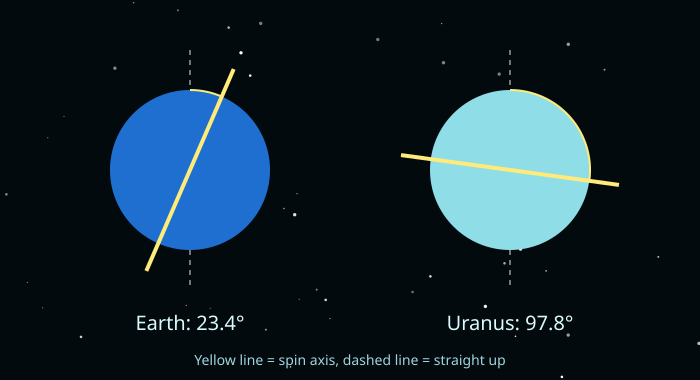

The Sideways Planet
Uranus is an ice giant. Under its atmosphere of hydrogen, helium and methane is a hot, dense layer of water, ammonia and methane ices. The methane gives it its pale blue-green color.
Uranus is tipped almost completely on its side, so it rolls around the Sun like a ball instead of spinning like a top.

Uranus Facts
- SizeAbout 50,724 km across, four times wider than Earth.
- DistanceAbout 2.9 billion km (19.2 AU) from the Sun.
- TiltIts axis is tilted about 98°, more than any other planet.
- DayOne spin takes about 17 hours and 14 minutes.
- YearOne orbit takes 84 Earth years.
- Coldest atmosphereTemperatures in its clouds drop to about −224 °C.
- Moons and rings29 known moons (the newest was found by the James Webb Space Telescope in 2025) and 13 thin, dark rings.
Tip Uranus Over
Compare Uranus's real tilt with Earth's. Press a button to rotate the planet.
Tilt: 97.8°. Uranus is lying on its side.
Read More
Because Uranus is on its side, each pole points almost straight at the Sun for part of its 84-year orbit. That means each pole gets about 42 years of nonstop sunlight followed by 42 years of darkness.
William Herschel discovered Uranus in 1781. It was the first planet found with a telescope, and it doubled the known size of the solar system overnight.
Most of Uranus's moons are named after characters from the plays of William Shakespeare and the poems of Alexander Pope, such as Miranda, Titania, Oberon and Puck.

Why Is It Sideways?
Scientists think one or more giant collisions with Earth-sized objects knocked Uranus over long ago.
Only one spacecraft has ever visited Uranus: Voyager 2 flew past in 1986.